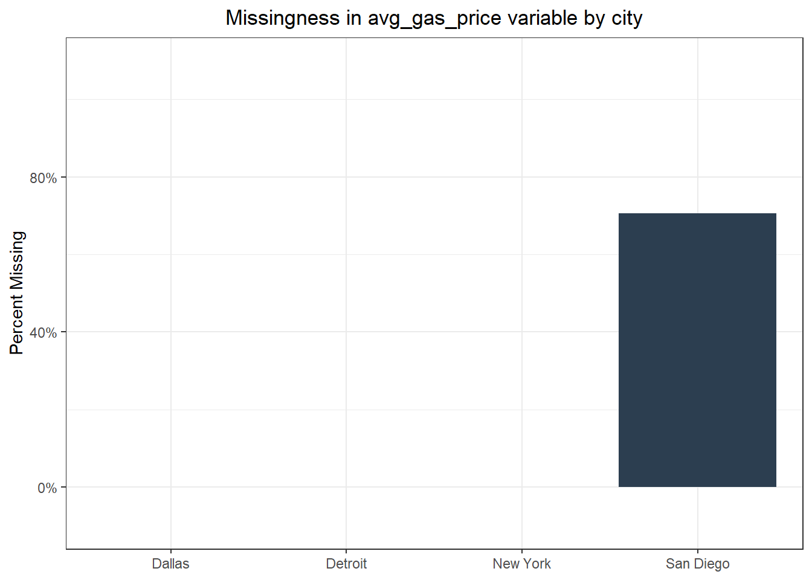
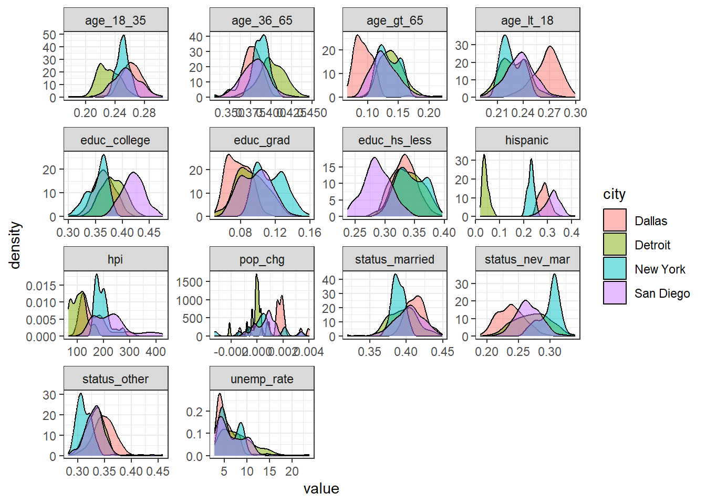

Forecasting with {modeltime} - Part I
Gathering data
Introduction
I learned about the modeltime (Dancho 2023) package – developed by the folks at Business Science – in 2021 and hadn’t had much chance to use it except for a few small coding exercises. With U.S. housing prices have being all over the news in recent times I thought about trying to forecast a housing price metric. My curiosity about housing price trends presented the perfect opportunity to take on a small project using modeltime. My goal for this project will be to model multiple time series together using various algorithms through a global modeling process then select the best models from that process and use those algorithms to run an iterative modeling process on the time series to try to get the best forecasts.
I’ve broken this project into five parts:
Gathering Data
Time series analysis
ARIMA with global and iterative modeling processes
Global forecasting models
Iterative forecasting models
This post will cover the first part: Gathering Data.
Choosing house price data
To perform this analysis, obviously the first thing I would need is a data set. I wanted data that had sufficient observations with enough granularity to be able to identify seasonality and level changes. I also wanted to compare time series across different regions or cities of the U.S. This meant getting data that was available at a regional/metropolitan level that went back at least 10 years with very few missing values (ideally none). I looked at the data available through the Federal Reserve Bank of St. Louis which hosts one of the largest repositories of U.S. economic data available by using the fredr (Boysel and Vaughan 2021) package and narrowed my search for data series down to either median home prices or the Case-Shiller Home Price Index. I chose the Case-Shiller HPI because I could get the data at the level of metro area rather than just U.S. region for a longer period of time, though there is the trade-off that this index only accounts for existing home sales. For my purposes this wasn’t a problem.
The Case-Shiller HPI data was available through 2023, but population data (discussed below) was available only through 2022 and there were some other issues with data from before 2006, so I got data starting in January 2006 and ending in December 2022.
Once I chose a data source, the next step was to choose cities. I wanted to compare cities from different regions of the U.S. that were different in other characteristics as well, e.g., population, climate, etc., to see how forecasts might differ. I chose San Diego, Dallas, Detroit, and New York City.
Additional data
One of the benefits of using modeltime it has functions for running models beyond ARIMA such as Prophet and eXtreme Gradient Boosting (XGB) for time series. To take advantage of this I wanted to add some features to my data. I chose to add unemployment rates, average gas prices, variables relating to demographic composition, and population for each city at the monthly level. I got the unemployment rate and average gas prices through fredr, population data from the U.S. Census’s American Community Survey (ACS) using the tidycensus (Walker and Herman 2024) package, and other demographic data from the Current Population Survey (CPS) (which is a joint program of the U.S. Census and the U.S. Bureau of Labor Statistics) using the cpsR (Saenz 2023) package.
Both tidycensus and cpsR require a U.S. Census API key. This post will not go into detail on how to obtain a key or how to set it up for use with the relevant packages.
Some of these data are at the metropolitan statistical area (MSA) level and others are at the core-based statistical area (CBSA) level. While these broadly overlap, which is why I didn’t make a big fuss about mixing them, they are technically different. The U.S. Census provides some definitions here.
As usual for me, I performed data importing and wrangling using various tidyverse (Wickham et al. 2019)package functions. I also used multidplyr (Wickham 2023) to perform some operations in parallel.
Loading Packages
To begin with, I first loaded my packages. I’ll include the gt package for displaying tables.
Getting Case-Shiller HPI data
I started by getting the appropriate Case-Shiller HPI series IDs for my cities of interest.
Code
hpi_ids <- fredr_series_search_text("Case-Shiller") |>
filter(
str_detect(
title,
"CA-San Diego|TX-Dallas|NY-New York|MI-Detroit Home Price Index"
),
seasonal_adjustment_short %in% "NSA",
frequency %in% "Monthly"
) |>
mutate(city = str_extract(title, "New York|Dallas|San Diego|Detroit")) |>
select(city, id)
gt(hpi_ids) |> gt_bold_head()| city | id |
|---|---|
| San Diego | SDXRNSA |
| Dallas | DAXRNSA |
| New York | NYXRNSA |
| Detroit | DEXRNSA |
Next I read in the Case-Shiller data and kept only the necessary variables.
Code
| city | date | hpi |
|---|---|---|
| Dallas | 2006-01-01 | 121.9108 |
| Dallas | 2006-02-01 | 121.3285 |
| Dallas | 2006-03-01 | 121.5217 |
| Dallas | 2006-04-01 | 122.3996 |
| Dallas | 2006-05-01 | 123.2863 |
| Dallas | 2006-06-01 | 124.4985 |
| Dallas | 2006-07-01 | 125.3672 |
| Dallas | 2006-08-01 | 125.7007 |
| Dallas | 2006-09-01 | 125.1859 |
| Dallas | 2006-10-01 | 124.5813 |
Getting unemployment rate and gas price data from FRED
Next I got series IDs for both average gas prices and unemployment rates for all four cities and got the data for the appropriate time span.
Code
# Get average gas price for each CBSA by month
gas_ids <- fredr_series_search_text(
"Average Price: Gasoline, Unleaded Regular"
) |>
filter(
str_detect(title, "New York|Dallas|San Diego|Detroit"),
frequency %in% "Monthly",
seasonal_adjustment_short %in% "NSA"
) |>
mutate(city = str_extract(title, "New York|Dallas|San Diego|Detroit")) |>
select(city, id)
gas_data <- gas_ids |>
mutate(
data = map(
id,
\(x) fredr(
series_id = x,
observation_start = ymd("2000-01-01"),
observation_end = ymd("2023-12-31"),
frequency = "m"
)
)
) |>
select(-id) |>
unnest(data) |>
select(city, date, avg_gas_price = value)
# Get average unemployment rate for each MSA by month
unemp_ids <- fredr_series_search_text("Unemployment: Rate") |>
filter(
str_detect(title, "New York|Dallas|San Diego|Detroit"),
frequency %in% "Monthly",
seasonal_adjustment_short %in% "NSA"
) |>
mutate(city = str_extract(title, "New York|Dallas|San Diego|Detroit")) |>
group_by(city) |>
mutate(
rnum = n(),
msa_str = str_detect(title, "MSA")
) |>
ungroup() |>
filter(rnum == 1 | msa_str) |>
select(city, id)
unemp_data <- unemp_ids |>
mutate(
data = map(
id,
\(x) fredr(
series_id = x,
observation_start = ymd("2000-01-01"),
observation_end = ymd("2023-12-31"),
frequency = "m"
)
)
) |>
select(-id) |>
unnest(data) |>
select(city, date, unemp_rate = value)Getting CPS data
Getting CPS data at the MSA level is a little more complicated than it is getting data series from FRED. CPS data can contain well over 100K rows for each month because the microdata are released at the household level and each data set has hundreds of variables. It also requires filtering and grouping the data by MSA code, which means getting the MSA codes that correspond to each MSA in my analysis. However, I knew that MSAs can change over time as population shifts. I felt confident that this wouldn’t be the case for my chosen cities because of their population sizes, but I wanted to check anyway. Finally, I did thought that pulling in all of that data at once then filtering and aggregating would be computationally inefficient and slow, so, instead, I wrote a function to perform all of the necessary operations and ran it in parallel. I chose the method that I did because most of the time was spent connecting to the CPS API. Once data are imported, the computations are fairly simple.
The first step was to get the MSA codes that corresponded to my cities of interest and check that I had a unique set across all of my years of interest. The data for these MSA codes came from the U.S. Census’s technical documentation page and MSA definitions only change once every few years.
Code
msa_code_tbl <- tribble(
~start_yr, ~end_yr,
2003, 2006,
2007, 2011,
2012, 2016,
2017, 2021
) |>
mutate(
suffix = str_sub(start_yr, 3, 4),
msa_url = map_chr(
suffix,
\(x) str_c(
"https://www2.census.gov/programs-surveys/cbp/technical-documentation/",
"reference/metro-area-geography-reference/msa_county_reference",
x,
".txt"
)
),
msa_code_data = map(
msa_url,
\(x) read_delim(x, delim = ",", show_col_types = FALSE) |>
filter(
str_detect(
name_msa,
"Dallas.*TX|San Diego.*CA|New York.*NY|Detroit.*MI"
)
) |>
mutate(
city = str_extract(name_msa, "Dallas|New York|San Diego|Detroit"),
msa = as.character(msa)
) |>
distinct(city, msa)
)
) |>
distinct(msa_code_data) |>
unnest(msa_code_data)
msa_code_tbl |> gt() |> gt_bold_head()| city | msa |
|---|---|
| Dallas | 19100 |
| Detroit | 19820 |
| New York | 35620 |
| San Diego | 41740 |
In the next step I defined the function for importing, filtering, and aggregating CPS data.
Code
get_cps_summaries <- function(cps_df, geographies) {
cps_df |>
rename(hispanic = matches("hspnon"), msa = starts_with("gt")) |>
filter(msa %in% geographies) |>
relocate(msa, pwsswgt, prtage, pemaritl, peeduca, hispanic) |>
mutate(
msa = as.character(msa),
pwsswgt = as.numeric(pwsswgt),
across(prtage:hispanic, as.integer),
across(prtage:hispanic, \(x) na_if(x, -1)),
age_lt_18 = prtage < 18,
age_18_35 = between(prtage, 18, 35),
age_36_65 = between(prtage, 36, 65),
age_gt_65 = prtage > 65,
educ_hs_less = peeduca < 40,
educ_college = peeduca %in% 40:43,
educ_grad = peeduca > 43,
status_married = pemaritl %in% 1:2,
status_nev_mar = pemaritl == 6,
status_other = !pemaritl %in% c(1:2, 6),
hispanic = hispanic == 1,
across(
c(age_lt_18:status_other, hispanic),
\(x) (x * pwsswgt)
)
) |>
group_by(msa) |>
summarise(
across(
c(age_lt_18:status_other, hispanic),
\(x) sum(x / sum(pwsswgt), na.rm = TRUE)
)
)
}With that function now defined, I move on to get CPS data using that function.
Code
# Set up a cluster to get all of the CPS data aggregations
cps_clust <- new_cluster(12)
cluster_library(cps_clust, c("tidyverse", "cpsR"))
cluster_copy(cps_clust, c("get_cps_summaries", "msa_code_tbl"))
# Get CPS data aggregations
cps_grid <- expand.grid(
yr = 2006:2023,
mo = 1:12
) |>
partition(cps_clust)
cps_data <- cps_grid |>
arrange(yr, mo) |>
mutate(
cps = map2(
yr, mo,
possibly(
\(y, m) {
get_basic(
y, m,
c("gtcbsa", "prtage", "pemaritl", "peeduca", "pehspnon", "pwsswgt")
) |>
get_cps_summaries(msa_code_tbl$msa)
}
)
)
) |>
collect() |>
unnest(cps) |>
mutate(msa = as.character(msa)) |>
left_join(msa_code_tbl, by = "msa") |>
select(-msa) |>
unite("date", yr, mo, sep = "-") |>
mutate(date = ym(date)) |>
relocate(city, date)This is what the CPS data looked like.
| city | date | age_lt_18 | age_18_35 | age_36_65 | age_gt_65 | educ_hs_less | educ_college | educ_grad | status_married | status_nev_mar | status_other | hispanic |
|---|---|---|---|---|---|---|---|---|---|---|---|---|
| Dallas | 2006-01-01 | 0.2839770 | 0.2751600 | 0.3507462 | 0.08780246 | 0.3612863 | 0.3246959 | 0.06969308 | 0.4193003 | 0.2093507 | 0.3713489 | 0.23589661 |
| Detroit | 2006-01-01 | 0.2633059 | 0.2178059 | 0.3914485 | 0.12411556 | 0.3647213 | 0.3357047 | 0.07179506 | 0.4001588 | 0.2336782 | 0.3661630 | 0.03352171 |
| New York | 2006-01-01 | 0.2420728 | 0.2408729 | 0.3889675 | 0.12649394 | 0.3721424 | 0.3287271 | 0.09625312 | 0.4060160 | 0.2625960 | 0.3313880 | 0.19769087 |
| San Diego | 2006-01-01 | 0.2398891 | 0.2393884 | 0.3969656 | 0.12375698 | 0.2819756 | 0.4378574 | 0.08594332 | 0.3991201 | 0.2550806 | 0.3457992 | 0.24626772 |
| Dallas | 2006-03-01 | 0.2991726 | 0.2852235 | 0.3324601 | 0.08314374 | 0.3481381 | 0.3412725 | 0.06266023 | 0.4069059 | 0.2147862 | 0.3783079 | 0.27328065 |
| Detroit | 2006-03-01 | 0.2660104 | 0.2155320 | 0.4070590 | 0.11139867 | 0.3738536 | 0.3548189 | 0.05050216 | 0.4191846 | 0.2244699 | 0.3563455 | 0.03402642 |
Getting population data
One would think that if any demographic data is simple to get, population data would be simple, right? I learned something different. I was interested in getting population data at a monthly level for each MSA of interest. I knew population was not counted monthly, but I thought I could get it from the CPS. In fact, one might notice that the code actually calls a population variable (pwsswgt ) to perform some calculations. The problem here was that at the MSA level population estimates varied in some cases by as much as 16%. While I I didn’t know if this was true or not I did believe (subjectively) that it was unlikely and I believed that CPS weights are not calibrated to MSAs. My understanding is that they are calibrated to the national and state levels. So, I thought a reasonable alternative would be to get data from the ACS 1-year survey and interpolate data from one year to the next. In fact, the reason that I started my time series in 2006 is that the ACS 1-year and 5-year survey data became available in 2005 and I needed one year before the time series for interpolation. However, there was wrinkle caused by COVID. The 1-year ACS was not released for 2020 because of understandable challenges with data collection. So, for 2020 I used ACS 5-year survey data. I started by getting all of the ACS 1-year data. Here again, I processed the data in parallel.
Code
# Create a cluster for getting ACS data
acs_clust <- new_cluster(12)
cluster_library(acs_clust, c("tidyverse", "tidycensus"))
# Get ACS data for 2005 to 2019, 2021, and 2022
acs1_pop_data <- tibble(year = c(2005:2019, 2021:2022)) |>
partition(acs_clust) |>
mutate(
pop_data = map(
year,
\(x) get_acs(
year = x,
variables = "B01001_001",
geography = "cbsa",
survey = "acs1",
show_call = FALSE
) |>
filter(str_detect(NAME, "New York|Dallas|San Diego|Detroit")) |>
mutate(city = str_extract(NAME, "New York|Dallas|San Diego|Detroit")) |>
select(city, population = estimate)
)
) |>
collect() |>
unnest(pop_data) |>
mutate(date = str_c(year, "12") |> ym(), .keep = "unused")Next I got the data for 2020 and combined it with the ACS 1-year data. I performed interpolation using the ts_impute_vec() function from the timetk (Dancho and Vaughan 2023) package.
Code
# Get data for 2020 separately since it wasn't available in the ACS 1-year
acs5_pop_data <- get_acs(
year = 2020,
variables = "B01001_001",
geography = "cbsa",
survey = "acs5",
show_call = FALSE
) |>
filter(str_detect(NAME, "New York|Dallas|San Diego|Detroit")) |>
mutate(
city = str_extract(NAME, "New York|Dallas|San Diego|Detroit"),
date = rep(ym("2020-12"), 4),
) |>
select(city, date, population = estimate)
# Put together all the ACS population data and interpolate between annual
# estimates
acs_pop_data <- expand_grid(
yr = 2006:2022,
mo = 1:12
) |>
add_row(yr = 2005, mo = 12) |>
expand_grid(city = c("New York", "Dallas", "San Diego", "Detroit")) |>
unite(date, yr, mo, sep = "-", remove = TRUE) |>
mutate(date = ym(date)) |>
arrange(date, city) |>
left_join(
bind_rows(acs1_pop_data, acs5_pop_data),
by = c("city", "date")
) |>
group_by(city) |>
arrange(date) |>
mutate(
population = timetk::ts_impute_vec(population, period = 1),
pop_chg = (population / lag(population)) - 1
) |>
drop_na(pop_chg) |>
ungroup() |>
select(!population)
head(acs_pop_data) |> gt() |> gt_bold_head()| date | city | pop_chg |
|---|---|---|
| 2006-01-01 | Dallas | 0.0040551186 |
| 2006-01-01 | Detroit | 0.0007530958 |
| 2006-01-01 | New York | 0.0021226567 |
| 2006-01-01 | San Diego | 0.0034579867 |
| 2006-02-01 | Dallas | 0.0040387411 |
| 2006-02-01 | Detroit | 0.0007525290 |
Merge data and check
With all of the data gathered and each data set containing variables for city and date (monthly) along with at least one demographic or economic variable, they were ready to be merged.
It would be a mistake to ever think that there is no more cleaning that can be done, so I skimmed the data using the skimr() function from the skimr (Waring et al. 2022) package.
| Name | econ_data |
| Number of rows | 816 |
| Number of columns | 17 |
| _______________________ | |
| Column type frequency: | |
| character | 1 |
| Date | 1 |
| numeric | 15 |
| ________________________ | |
| Group variables | None |
Variable type: character
| skim_variable | n_missing | complete_rate | min | max | empty | n_unique | whitespace |
|---|---|---|---|---|---|---|---|
| city | 0 | 1 | 6 | 9 | 0 | 4 | 0 |
Variable type: Date
| skim_variable | n_missing | complete_rate | min | max | median | n_unique |
|---|---|---|---|---|---|---|
| date | 0 | 1 | 2006-01-01 | 2022-12-01 | 2014-06-16 | 204 |
Variable type: numeric
| skim_variable | n_missing | complete_rate | mean | sd | p0 | p25 | p50 | p75 | p100 | hist |
|---|---|---|---|---|---|---|---|---|---|---|
| hpi | 0 | 1.00 | 172.19 | 64.38 | 64.47 | 122.40 | 168.06 | 203.87 | 427.80 | ▆▇▃▁▁ |
| unemp_rate | 0 | 1.00 | 6.50 | 2.93 | 2.80 | 4.20 | 5.60 | 8.30 | 23.90 | ▇▃▁▁▁ |
| avg_gas_price | 144 | 0.82 | 2.95 | 0.76 | 1.36 | 2.38 | 2.84 | 3.48 | 6.29 | ▅▇▅▁▁ |
| age_lt_18 | 0 | 1.00 | 0.24 | 0.02 | 0.19 | 0.22 | 0.24 | 0.25 | 0.30 | ▂▇▇▃▂ |
| age_18_35 | 0 | 1.00 | 0.25 | 0.02 | 0.18 | 0.24 | 0.25 | 0.26 | 0.31 | ▁▂▇▆▁ |
| age_36_65 | 0 | 1.00 | 0.39 | 0.02 | 0.33 | 0.38 | 0.39 | 0.40 | 0.45 | ▁▃▇▂▁ |
| age_gt_65 | 0 | 1.00 | 0.12 | 0.03 | 0.07 | 0.11 | 0.12 | 0.14 | 0.22 | ▃▇▆▁▁ |
| educ_hs_less | 0 | 1.00 | 0.33 | 0.03 | 0.24 | 0.31 | 0.33 | 0.35 | 0.40 | ▁▃▇▇▃ |
| educ_college | 0 | 1.00 | 0.38 | 0.03 | 0.30 | 0.36 | 0.38 | 0.40 | 0.48 | ▂▇▇▅▁ |
| educ_grad | 0 | 1.00 | 0.10 | 0.02 | 0.05 | 0.08 | 0.10 | 0.11 | 0.16 | ▃▇▇▃▁ |
| status_married | 0 | 1.00 | 0.40 | 0.02 | 0.32 | 0.39 | 0.40 | 0.41 | 0.45 | ▁▁▇▇▂ |
| status_nev_mar | 0 | 1.00 | 0.27 | 0.03 | 0.19 | 0.25 | 0.27 | 0.29 | 0.34 | ▂▆▇▇▂ |
| status_other | 0 | 1.00 | 0.33 | 0.02 | 0.28 | 0.32 | 0.33 | 0.34 | 0.46 | ▃▇▂▁▁ |
| hispanic | 0 | 1.00 | 0.22 | 0.11 | 0.02 | 0.17 | 0.25 | 0.30 | 0.42 | ▅▁▆▇▂ |
| pop_chg | 0 | 1.00 | 0.00 | 0.00 | 0.00 | 0.00 | 0.00 | 0.00 | 0.00 | ▁▂▇▃▁ |
Overall the data look good except for the avg_gas_price variable, which is the only variable that has any missing values. I’ll turn to that shortly, but I’ll briefly describe the variables in the data set below:
city: self-explanatorydate: month expressed as the first day of the monthhpi: Case-Shiller Home Price Index valueunemp_rate: Unemployment rateavg_gas_price: Average gas priceage_lt_18: Proportion of the population younger than 18 years oldage_18_35: Proportion of the population between the ages of 18 and 35age_36_65: Proportion of the population between the ages of 36 and 65age_gt_65: Proportion of the population older than 65 years oldeduc_hs_less: Proportion of the population with up to a high school diplomaeduc_college: Proportion of the population with more than a high school diploma and up to a bachelor’s degreeeduc_grad: Proportion of the population with education higher than a bachelor’s degreestatus_married: Proportion of the population that is married; including separatedstatus_nev_mar: Proportion of the population that has never been marriedstatus_other: Proportion of the population not categorized as eitherstatus_marriedorstatus_nev_marhispanic: Proportion of the population that reported Hispanic ethnicitypop_chg: Population change from one month to the next
Once I skimmed the data, I took a closer look at the percent of avg_gas_price values that were missing for each city.
Code
econ_data |>
group_by(city) |>
summarise(pct_miss_gas = sum(is.na(avg_gas_price)) / n()) |>
ggplot(aes(y = pct_miss_gas, x = city)) +
geom_col(fill = "#2c3e50") +
scale_y_continuous(limits = c(-0.1, 1.1), labels = scales::percent) +
labs(
y = "Percent Missing",
x = NULL,
title = "Missingness in avg_gas_price variable by city"
) +
theme_bw() +
theme(plot.title = element_text(hjust = 0.5))
Evidently data were missing only for San Diego. Below are the start and end dates of average gas price data for San Diego in this data set.
Code
| start_date | end_date |
|---|---|
| 2018-01-01 | 2022-12-01 |
As it turns out, reports of average gas price data for San Diego start in January of 2018, which means that 12 years of data would be missing. With that many values missing for one of the cities it makes sense to drop the average gas price variable.
Code
| city | date | hpi | unemp_rate | age_lt_18 | age_18_35 | age_36_65 | age_gt_65 | educ_hs_less | educ_college | educ_grad | status_married | status_nev_mar | status_other | hispanic | pop_chg |
|---|---|---|---|---|---|---|---|---|---|---|---|---|---|---|---|
| Dallas | 2006-01-01 | 121.9108 | 5.1 | 0.2839770 | 0.2751600 | 0.3507462 | 0.08780246 | 0.3612863 | 0.3246959 | 0.06969308 | 0.4193003 | 0.2093507 | 0.3713489 | 0.2358966 | 0.004055119 |
| Dallas | 2006-02-01 | 121.3285 | 5.2 | 0.2955885 | 0.2749812 | 0.3499053 | 0.07952504 | 0.3534445 | 0.3474221 | 0.05914608 | 0.4186053 | 0.2195799 | 0.3618148 | 0.2640835 | 0.004038741 |
| Dallas | 2006-03-01 | 121.5217 | 5.0 | 0.2991726 | 0.2852235 | 0.3324601 | 0.08314374 | 0.3481381 | 0.3412725 | 0.06266023 | 0.4069059 | 0.2147862 | 0.3783079 | 0.2732806 | 0.004022495 |
| Dallas | 2006-04-01 | 122.3996 | 4.8 | 0.2938252 | 0.2784571 | 0.3445776 | 0.08314010 | 0.3324701 | 0.3589532 | 0.06155738 | 0.3932068 | 0.2133219 | 0.3934713 | 0.2540514 | 0.004006380 |
| Dallas | 2006-05-01 | 123.2863 | 4.9 | 0.2744636 | 0.2824573 | 0.3631222 | 0.07995692 | 0.3610289 | 0.3519889 | 0.05978182 | 0.4005990 | 0.2167855 | 0.3826155 | 0.2722199 | 0.003990393 |
| Dallas | 2006-06-01 | 124.4985 | 5.3 | 0.2739175 | 0.2861816 | 0.3643186 | 0.07558240 | 0.3512415 | 0.3512756 | 0.06253083 | 0.4065603 | 0.2122996 | 0.3811401 | 0.2734042 | 0.003974533 |
Finally, I’d like to visualize the densities of all of the variables by city just to make sure nothing jumps out that might need any correction.
Code

There are some interesting patterns, particularly in the differences across the age groups, but there’s nothing alarming. With all this data in hand, the next step is to perform some time series analysis on the Case-Shiller HPI which I’ll show in Part 2 of this set of posts.